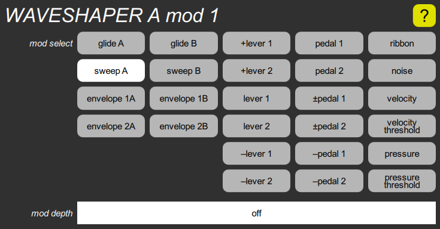

WAVESHAPER mod cluster

This contains a standard mod select parameter and a corresponding mod depth slider. Note that the depth on the slider is shown in cycles for the various FM shapes, and in percent for the saws and pulse shapes. These have no effect if the shape is set to pink noise, white noise, or impulse.